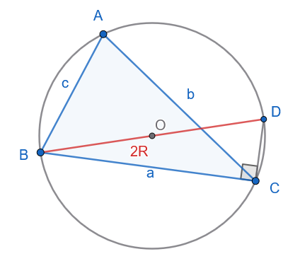
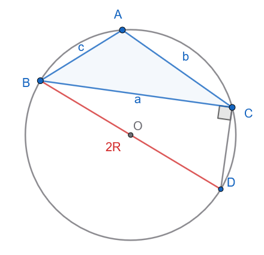
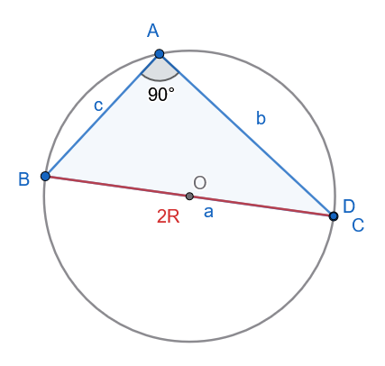
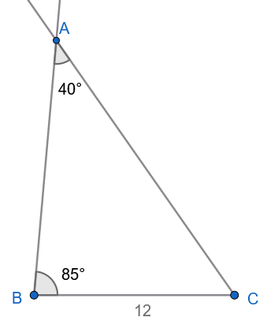
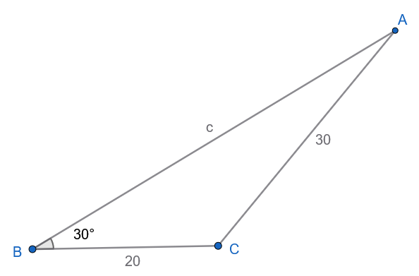
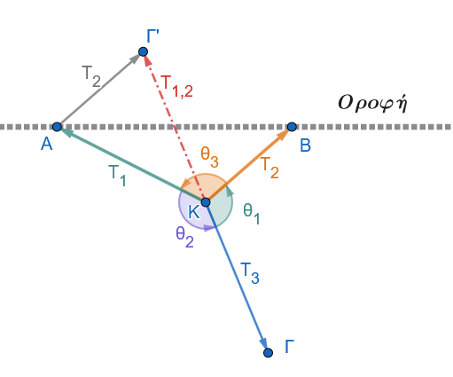
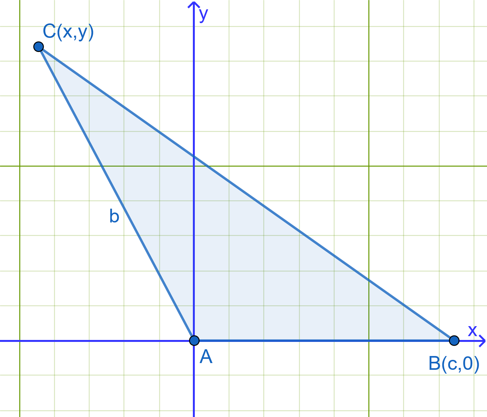
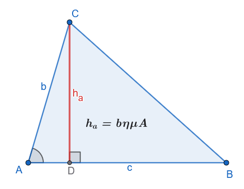
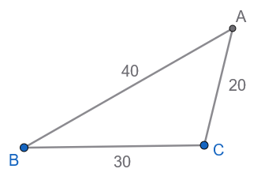
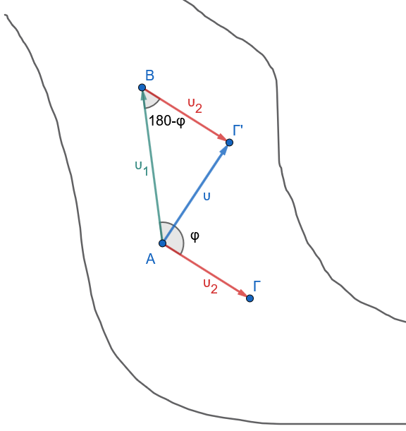

1 Επίλυση τριγώνου
1.1 Νόμος των Ημιτόνων
ΘΕΩΡΗΜΑ (Νόμος των Ημιτόνων)
Σε κάθε τρίγωνο \(ABC\) με πλευρές \(a, b, c\) και απέναντι γωνίες \(A, B, C\), ο λόγος κάθε πλευράς προς το ημίτονο της απέναντι γωνίας είναι σταθερός και ισούται με τη διάμετρο \(2R\) του περιγεγραμμένου κύκλου του τριγώνου:
\[\mathbf{\frac{a}{ημ A} = \frac{b}{ημ B} = \frac{c}{ημ C} = 2R} \quad\]
ΑΠΟΔΕΙΞΗ
Έστω \((O, R)\) ο περιγεγραμμένος κύκλος του τριγώνου \(ABC\).
- Περίπτωση 1η (Η γωνία \(A\) είναι οξεία):

Φέρνουμε τη διάμετρο \(BD = 2R\) και τη χορδή \(CD\). Στο εγγεγραμμένο τρίγωνο \(BCD\), η γωνία \(\widehat{BCD} = 90^\circ\) διότι βαίνει σε ημικύκλιο.
Από το ορθογώνιο τρίγωνο \(BCD\) ισχύει: \[ημ D = \frac{\text{απέναντι κάθετη}}{\text{υποτείνουσα}} = \frac{a}{BD} = \frac{a}{2R} \implies a = 2R ημ D \quad\]
Όμως, οι εγγεγραμμένες γωνίες \(A\) και \(D\) βαίνουν στο ίδιο τόξο \(BC\), άρα \(D = A\).
Συνεπώς: \[ημ A = ημ D = \frac{a}{2R} \iff \mathbf{\frac{a}{ημ A} = 2R} \quad\]
- Περίπτωση 2η (Η γωνία \(A\) είναι αμβλεία):

Φέρνουμε πάλι τη διάμετρο \(BD = 2R\). Το τετράπλευρο \(ABDC\) είναι εγγεγραμμένο στον κύκλο, οπότε οι απέναντι γωνίες \(A\) και \(D\) είναι παραπληρωματικές (\(A + D = 180^\circ \implies ημ D = ημ(180^\circ - A) = ημ A\)).
Από το ορθογώνιο τρίγωνο \(BCD\) έχουμε: \[ημ D = \frac{a}{2R} \implies ημ A = \frac{a}{2R} \iff \mathbf{\frac{a}{ημ A} = 2R} \quad\]
- Περίπτωση 3η (Η γωνία \(A\) είναι ορθή, \(A = 90^\circ\)):

Τότε η πλευρά \(a\) είναι η διάμετρος του κύκλου (\(a = 2R\)) και \(ημ A = ημ 90^\circ = 1\).
Επομένως, \(\dfrac{a}{ημ A} = \dfrac{2R}{1} = 2R\).
Με τον ίδιο ακριβώς τρόπο αποδεικνύεται ότι \(\dfrac{b}{ημ B} = 2R\) και \(\dfrac{c}{ημ C} = 2R\). Άρα \(\dfrac{a}{ημ A} = \dfrac{b}{ημ B} = \dfrac{c}{ημ C} = 2R\).
(Όπερ έδει δείξαι)
Παρατήρηση
Ο νόμος ημιτόνων αποτελείται από αναλογίες, Σε κάθε μία αναλογία π.χ \[\mathbf{\frac{a}{ημ A} = \frac{b}{ημ B}} \quad\] αν γνωρίζουμε τους τρεις όρους της αναλογίας μπορούμε να βρούμε τον τέταρτο λύνοντας ως προς αυτόν τον άγνωστο όρο.
Το ίδιο και για την \[\mathbf{\frac{a}{ημ A} = 2R} \quad\]
1.1.1 ΠΑΡΑΔΕΙΓΜΑΤΑ
Παράδειγμα 1:
Να επιλυθεί το τρίγωνο \(ABC\) με \(a = 12\), \(A = 40^\circ\) και \(B = 85^\circ\).
Λύση

Υπολογισμός της τρίτης γωνίας \(C\): \[A + B + C = 180^\circ \implies C = 180^\circ - (40^\circ + 85^\circ) = 180^\circ - 125^\circ \implies \mathbf{C = 55^\circ}\]
Υπολογισμός της πλευράς \(b\) με τον Νόμο των Ημιτόνων: \[\frac{a}{ημ A} = \frac{b}{ημ B} \implies b = \frac{a \cdot ημ B}{ημ A} = \frac{12 \cdot ημ 85^\circ}{ημ 40^\circ} \approx \frac{12 \cdot 0.9962}{0.6428} \approx \mathbf{18.60}\]
Υπολογισμός της πλευράς \(c\): \[\frac{a}{ημ A} = \frac{c}{ημ C} \implies c = \frac{a \cdot ημ C}{ημ A} = \frac{12 \cdot ημ 55^\circ}{ημ 40^\circ} \approx \frac{12 \cdot 0.8192}{0.6428} \approx \mathbf{15.29}\]
Παράδειγμα 2:
Να επιλυθεί το τρίγωνο \(ABC\) με \(a = 20\), \(b = 30\) και \(B = 30^\circ\).
Λύση

Από τον Νόμο των Ημιτόνων υπολογίζουμε το \(ημ A\): \[\frac{a}{ημ A} = \frac{b}{ημ B} \implies ημ A = \frac{a \cdot ημ B}{b} = \frac{20 \cdot ημ 30^\circ}{30} = \frac{20 \cdot 0.5}{30} = \mathbf{\frac{1}{3} \approx 0.3333}\]
Αναζητούμε τη γωνία \(A \in (0^\circ, 180^\circ)\): \[ημ A \approx 0.3333 \implies A_1 \approx 19.47^\circ \quad \text{ή} \quad A_2 = 180^\circ - 19.47^\circ \approx 160.53^\circ\]
Έλεγχος δυνατότητας: Επειδή \(a < b\) (\(20 < 30\)), πρέπει υποχρεωτικά και οι απέναντι γωνίες να ικανοποιούν τη σχέση \(A < B = 30^\circ\).
Η τιμή \(A_2 \approx 160.53^\circ\) απορρίπτεται διότι \(A_2 > B\) (επίσης \(A_2 + B = 190.53^\circ > 180^\circ\)).
Δεκτή είναι μόνο η γωνία \(A \approx 19.47^\circ\).
Υπολογισμός της γωνίας \(C\): \[C = 180^\circ - (A + B) \approx 180^\circ - (19.47^\circ + 30^\circ) = \mathbf{130.53^\circ}\]
Υπολογισμός της πλευράς \(c\): \[c = \frac{b \cdot ημ C}{ημ B} = \frac{30 \cdot ημ 130.53^\circ}{ημ 30^\circ} = \frac{30 \cdot 0.7601}{0.5} \approx \mathbf{45.61}\]
Παράδειγμα 3:
Ένα σώμα βάρους \(\vec{w}\) ισορροπεί αναρτημένο από έναν κεντρικό μεταλλικό κόμβο \(K\).
Στον κόμβο \(K\) συνδέονται δύο μη εκτατά καλώδια \(KA\) και \(KB\) από την οροφή (ταβάνι), τα οποία ασκούν δυνάμεις τάσης \(\vec{T}_1\) και \(\vec{T}_2\) αντίστοιχα, καθώς και ένα καλώδιο με το οποίο ένα άνθρωπος τραβάει το βάρος ισορροπώντας το σύστημα ασκώντας τάση \(\vec{T}_3\) .
Οι διευθύνσεις των τριών δυνάμεων σχηματίζουν μεταξύ τους γωνίες:
\(θ_1 = (\widehat{\vec{T}_2, \vec{T}_3})\)
\(θ_2 = (\widehat{\vec{T}_1, \vec{T}_3})\)
\(θ_3 = (\widehat{\vec{T}_1, \vec{T}_2})\)
όπως φαίνεται στην ισορροπία του κόμβου (\(\vec{T}_1 + \vec{T}_2 + \vec{T}_3 = \vec{0}\)).
Θεωρώντας ότι η συνισταμένη \(\vec{T}_{12}\) των \(\vec{T}_1\) και \(\vec{T}_2\) εξουδετερώνει την \(\vec{T}_3\) (δηλαδή \(\vec{T}_{12} = -\vec{T}_3\)), να σχεδιάσετε το αντίστοιχο διανυσματικό τρίγωνο.
Εφαρμόζοντας το νόμο των ημιτόνων στο τρίγωνο αυτό και χρησιμοποιώντας τις τριγωνομετρικές ιδιότητες των παραπληρωματικών γωνιών, να αποδείξετε ότι: \[\frac{T_1}{ημθ_1} = \frac{T_2}{ημθ_2} = \frac{T_3}{ημθ_3}\]
Λύση

Εφαρμόζουμε τον νόμο των ημιτόνων στο τρίγωνο ΚΑΓ’
\[\frac{T_1}{ημ \widehat{AΓ'Κ}} = \frac{T_2}{ημ \widehat{ΑΚΓ'}} = \frac{T_{1,2}}{ημ \widehat{KAΓ'}} \implies \frac{T_1}{ημ θ_1} = \frac{T_2}{ημθ_2} = \frac{T_{3}}{ημ θ_3}\]
Επειδή \(\widehat{AΓ'Κ}=\widehat{Γ'ΚΒ}=180^ο-θ_1 \implies ημ\widehat{AΓ'Κ}=ημ\widehat{Γ'ΚΒ}=ημ(180^ο-θ_1)=ημθ_1\) ,
\(\widehat{AΚΓ'}=180^ο-θ_2 \implies ημ\widehat{AΚΓ'}=ημ(180^ο-θ_2)=ημθ_2\) και
\(\widehat{ΚAΓ'}=180^ο-θ_3 \implies ημ\widehat{ΚΑΓ'}=ημ(180^ο-θ_3)=ημθ_3\)
1.2 Νόμος των Συνημίτονων
ΘΕΩΡΗΜΑ (Νόμος των Συνημίτονων)
Σε κάθε τρίγωνο \(ABC\), το τετράγωνο οποιασδήποτε πλευράς ισούται με το άθροισμα των τετραγώνων των δύο άλλων πλευρών, ελαττωμένο κατά το διπλάσιο γινόμενό τους επί το συνημίτονο της περιεχόμενης γωνίας τους: \[\mathbf{a^2 = b^2 + c^2 - 2bc συν A} \quad\] \[\mathbf{b^2 = a^2 + c^2 - 2ac συν B} \quad\] \[\mathbf{c^2 = a^2 + b^2 - 2ab συν C} \quad\]
ΑΠΟΔΕΙΞΗ

Θεωρούμε καρτεσιανό σύστημα συντεταγμένων με αρχή την κορυφή \(A(0,0)\) και τον θετικό ημιάξονα \(Ax\) να ταυτίζεται με την πλευρά \(AB\) (μήκους \(c\)).
Οι συντεταγμένες της κορυφής \(B\) είναι \(B(c, 0)\).
Οι συντεταγμένες της κορυφής \(C\) εκφράζονται μέσω της γωνίας \(A\) και της υποτείνουσας/πλευράς \(b\) ως: \[C(x, y) = C(b συν A, b ημ A) \quad\]
Η απόσταση των σημείων \(B\) και \(C\) είναι το μήκος της πλευράς \(a = (BC)\).
Από τον τύπο της απόστασης δύο σημείων στο επίπεδο έχουμε: \[a^2 = (BC)^2 = (x_C - x_B)^2 + (y_C - y_B)^2 \quad\] \[a^2 = (b συν A - c)^2 + (b ημ A - 0)^2 \quad\] \[a^2 = b^2 συν^2 A - 2bc συν A + c^2 + b^2 ημ^2 A \quad\] \[a^2 = b^2 (ημ^2 A + συν^2 A) + c^2 - 2bc συν A \quad\]
Επειδή \(ημ^2 A + συν^2 A = 1\), λαμβάνουμε: \[\mathbf{a^2 = b^2 + c^2 - 2bc συν A} \quad\]
Όμοια αποδεικνύονται και οι άλλοι τύποι.
(Όπερ έδει δείξαι)
Παρατήρηση
Ο νόμος συνημιτόνων αποτελείται από ισότητες. Σε κάθε μία ισότητα π.χ \[\mathbf{a^2 = b^2 + c^2 - 2bc συν A} \quad\], αν γνωρίζουμε όλα τα στοιχεία εκτός από ένα (άγνωστο), μπορούμε να βρούμε τον άγνωστο λύνοντας ως προς αυτόν τον άγνωστο όρο.
1.3 ΠΟΡΙΣΜΑ: Τύποι Εμβαδού Τριγώνου
- Βασικός Τύπος Ημιτόνου για το Εμβαδόν:
Το εμβαδόν \(E\) ενός τριγώνου \(ABC\) ισούται με το μισό του γινομένου δύο πλευρών του επί το ημίτονο της περιεχόμενης γωνίας τους:
\[\mathbf{E = \frac{1}{2}bc ημ A = \frac{1}{2}ac ημ B = \frac{1}{2}ab ημ C} \quad\]
Απόδειξη:

Φέρνουμε το ύψος \(h_a = CD\) από την κορυφή \(C\) προς την πλευρά \(c = AB\).
Στο ορθογώνιο τρίγωνο \(ADC\) ισχύει \(h_a = b ημ A\).
Το εμβαδόν του τριγώνου είναι: \[E = \frac{1}{2} \cdot \text{βάση} \cdot \text{ύψος} = \frac{1}{2} c \cdot h_a = \frac{1}{2} c (b ημ A) = \mathbf{\frac{1}{2}bc ημ A} \quad\]
- Έκφραση μέσω της Ακτίνας
\(R\) του Περιγεγραμμένου Κύκλου:
Απόδειξη:
Από τον Νόμο των Ημιτόνων ισχύει \(ημ A = \dfrac{a}{2R}\). Αντικαθιστώντας στον τύπο του εμβαδού: \[E = \frac{1}{2}bc \cdot \left(\frac{a}{2R}\right) \implies \mathbf{E = \frac{abc}{4R}} \quad\]
Αντικαθιστώντας \(a = 2R ημ A\), \(b = 2R ημ B\), \(c = 2R ημ C\): \[E = \frac{(2R ημ A)(2R ημ B)(2R ημ C)}{4R} \implies \mathbf{E = 2R^2 ημ A ημ B ημ C} \quad\]
- Τύπος του Ήρωνα:
Αν \(\tau = \dfrac{a+b+c}{2}\) είναι η ημιπερίμετρος του τριγώνου, τότε:
\[\mathbf{E = \sqrt{\tau(\tau-a)(\tau-b)(\tau-c)}} \quad\]
1.3.1 ΠΑΡΑΔΕΙΓΜΑΤΑ
Παράδειγμα 1:
Να επιλυθεί το τρίγωνο \(ABC\) με \(a = 30\), \(b = 20\) και \(c = 40\).
Λύση

Υπολογισμός της γωνίας \(A\) από τον Νόμο των Συνημίτονων: \[συν A = \frac{b^2 + c^2 - a^2}{2bc} = \frac{20^2 + 40^2 - 30^2}{2 \cdot 20 \cdot 40} = \frac{400 + 1600 - 900}{1600} =\\ \frac{1100}{1600} = \mathbf{0.6875} \implies \mathbf{A \approx 46.57^\circ}\]
Υπολογισμός της γωνίας \(B\): \[συν B = \frac{a^2 + c^2 - b^2}{2ac} = \frac{30^2 + 40^2 - 20^2}{2 \cdot 30 \cdot 40} = \frac{900 + 1600 - 400}{2400} = \\ \frac{2100}{2400} = \mathbf{0.875} \implies \mathbf{B \approx 28.96^\circ}\]
Υπολογισμός της γωνίας \(C\): \[C = 180^\circ - (A + B) \approx 180^\circ - (46.57^\circ + 28.96^\circ) = \mathbf{104.47^\circ}\]
Παράδειγμα 2:
Να επιλυθεί το τρίγωνο \(ABC\) με \(b = 20\), \(c = 35\) και \(A = 60^\circ\).
Λύση
Υπολογισμός της πλευράς \(a\) από τον Νόμο των Συνημίτονων: \[a^2 = b^2 + c^2 - 2bc συν A = 20^2 + 35^2 - 2 \cdot 20 \cdot 35 \cdot συν 60^\circ = \\ 400 + 1225 - 1400 \cdot 0.5 = 1625 - 700 = 925\] \[\mathbf{a = \sqrt{925} = 5\sqrt{37} \approx 30.41}\]
Υπολογισμός της γωνίας \(B\): \[συν B = \frac{a^2 + c^2 - b^2}{2ac} = \frac{925 + 1225 - 400}{2 \cdot 30.41 \cdot 35} = \frac{1750}{2128.7} \approx \mathbf{0.8221} \implies \mathbf{B \approx 34.70^\circ}\]
Υπολογισμός της γωνίας \(C\): \[C = 180^\circ - (60^\circ + 34.70^\circ) = \mathbf{85.30^\circ}\]
Παράδειγμα 3:
Ένα ταχύπλοο σκάφος κινείται σε ένα ποτάμι.
Η ταχύτητα του σκάφους ως προς το νερό συμβολίζεται με \(\vec{v}_1\) και έχει μέτρο \(v_1\).
Η ταχύτητα του ρεύματος του ποταμού συμβολίζεται με \(\vec{v}_2\) και έχει μέτρο \(v_2\).
Τα δύο διανύσματα των ταχυτήτων σχηματίζουν μεταξύ τους γωνία \(\phi\).
Σύμφωνα με την αρχή της σχετικότητας της κίνησης, η ολική ταχύτητα \(\vec{v}\) του σκάφους ως προς την όχθη είναι η συνισταμένη: \[\vec{v} = \vec{v}_1 + \vec{v}_2\]
Με τη βοήθεια του κανόνα του παραλληλογράμμου και εφαρμόζοντας το νόμο των συνημιτόνων στο κατάλληλο τρίγωνο, να αποδείξετε ότι το μέτρο \(v\) της ολικής ταχύτητας δίνεται από τη σχέση: \[v^2 = v_1^2 + v_2^2 + 2v_1 v_2 συν\phi\]
Λύση

Σύντομη υπόδειξη επίλυσης:
Στο τρίγωνο σύνθεσης των διανυσμάτων, η απέναντι γωνία από την ολική ταχύτητα \(\vec{v}\) είναι παραπληρωματική της γωνίας \(\phi\), δηλαδή \(180^\circ - \phi\).
Εφαρμόζοντας τον νόμο των συνημιτόνων: \(v^2 = v_1^2 + v_2^2 - 2v_1 v_2 συν(180^\circ - \phi)\).
Επειδή \(συν(180^\circ - \phi) = -συν\phi\), προκύπτει άμεσα το πρόσημο \(+\) στον όρο του γινομένου).
1.4 Ασκήσεις στην Επίλυση Τριγώνου
1.4.1 Ομάδα Α: Υπολογισμός Στοιχείων & Εμβαδού
Να επιλυθεί το τρίγωνο \(ABC\) με \(b = 10\), \(B = 45^\circ\) και \(C = 60^\circ\).
Να επιλυθεί το τρίγωνο \(ABC\) με \(a = 7\), \(b = 8\) και \(c = 9\).
Να υπολογιστεί το εμβαδόν \(E\) και η ακτίνα \(R\) του περιγεγραμμένου κύκλου τριγώνου \(ABC\) με \(a = 5\), \(b = 6\) και \(c = 7\).
Σε τρίγωνο \(ABC\) δίνονται \(a = 10\), \(b = 10\sqrt{3}\) και \(A = 30^\circ\). Να επιλυθεί το τρίγωνο (να εξεταστεί αν υπάρχουν μία ή δύο λύσεις).
Δίνεται τρίγωνο \(ABC\) με \(a = 4\), \(b = 5\) και περιεχόμενη γωνία \(C = 120^\circ\). Να υπολογιστούν η πλευρά \(c\) και το εμβαδόν \(E\).
1.4.2 Ομάδα Β: Αποδεικτικές Σχέσεις Πλευρών και Γωνιών
- Να αποδειχθεί ότι σε κάθε τρίγωνο \(ABΓ\) ισχύει ο τύπος της προβολής: \[a = β συν Γ + γ συν B\]
Σχεδιάστε το ύψος ΑΔ και τότε α=ΒΔ+ΔΓ=………….
- Εκφώνηση
Να αποδειχθεί ότι σε κάθε τρίγωνο \(ABC\) ισχύει: \[(b + c)\sin\left(\frac{A}{2}\right) = a\cos\left(\frac{B - C}{2}\right)\]
Λύση
Για να αποδείξουμε τη σχέση σε κάθε τρίγωνο \(ABC\): \[(b + c)\sin\left(\frac{A}{2}\right) = a\cos\left(\frac{B - C}{2}\right)\]
θα χρησιμοποιήσουμε τον νόμο των ημιτόνων και τους τύπους μετατροπής αθροίσματος σε γινόμενο.
1: Εφαρμογή του νόμου των ημιτόνων
Από τον νόμο των ημιτόνων γνωρίζουμε ότι: \[\frac{a}{\sin A} = \frac{b}{\sin B} = \frac{c}{\sin C} = 2R\] όπου \(R\) είναι η ακτίνα του περιγεγραμμένου κύκλου του τριγώνου.
Συνεπώς, οι πλευρές εκφράζονται ως: \[a = 2R\sin A, \quad b = 2R\sin B, \quad c = 2R\sin C\]
2: Ανάπτυξη του αριστερού μέλους
Έστω \(L\) το αριστερό μέλος της προς απόδειξη σχέσης: \[L = (b + c)\sin\left(\frac{A}{2}\right)\]
Αντικαθιστούμε τα \(b\) και \(c\): \[L = (2R\sin B + 2R\sin C)\sin\left(\frac{A}{2}\right) = 2R(\sin B + \sin C)\sin\left(\frac{A}{2}\right)\]
Εφαρμόζουμε τον τύπο μετατροπής αθροίσματος ημιτόνων σε γινόμενο: \[\sin B + \sin C = 2\sin\left(\frac{B + C}{2}\right)\cos\left(\frac{B - C}{2}\right)\]
Άρα: \[L = 2R \cdot \left[2\sin\left(\frac{B + C}{2}\right)\cos\left(\frac{B - C}{2}\right)\right]\sin\left(\frac{A}{2}\right)\] \[L = 4R\sin\left(\frac{B + C}{2}\right)\cos\left(\frac{B - C}{2}\right)\sin\left(\frac{A}{2}\right)\]
3: Αξιοποίηση της σχέσης των γωνιών του τριγώνου
Επειδή \(A + B + C = 180^\circ\), έχουμε: \[B + C = 180^\circ - A \iff \frac{B + C}{2} = 90^\circ - \frac{A}{2}\]
Επομένως: \[\sin\left(\frac{B + C}{2}\right) = \sin\left(90^\circ - \frac{A}{2}\right) = \cos\left(\frac{A}{2}\right)\]
Αντικαθιστούμε στο \(L\): \[L = 4R \cos\left(\frac{A}{2}\right) \cos\left(\frac{B - C}{2}\right) \sin\left(\frac{A}{2}\right)\]
Αναδιατάσσουμε τους όρους: \[L = 2R \cdot \left[2\sin\left(\frac{A}{2}\right)\cos\left(\frac{A}{2}\right)\right] \cdot \cos\left(\frac{B - C}{2}\right)\]
4: Ολοκλήρωση της απόδειξης
Χρησιμοποιούμε τον τύπο διπλάσιου τόξου \(2\sin\left(\frac{A}{2}\right)\cos\left(\frac{A}{2}\right) = \sin A\): \[L = 2R\sin A \cdot \cos\left(\frac{B - C}{2}\right)\]
Όμως από τον νόμο των ημιτόνων ισχύει \(2R\sin A = a\).
Συνεπώς: \[L = a\cos\left(\frac{B - C}{2}\right)\]
που είναι ακριβώς το δεξί μέλος της ισότητας.
Άρα αποδείχθηκε ότι: \[(b + c)\sin\left(\frac{A}{2}\right) = a\cos\left(\frac{B - C}{2}\right)\]
- Εκφώνηση
Να αποδειχθεί ότι σε κάθε τρίγωνο \(ABC\) ισχύει: \[a^2 ημ(B - C) = (b^2 - c^2) ημ A\]
Λύση
Για να αποδείξουμε ότι σε κάθε τρίγωνο \(ABC\) ισχύει: \[a^2 \sin(B - C) = (b^2 - c^2)\sin A\]
θα χρησιμοποιήσουμε τον νόμο των ημιτόνων.
1: Εφαρμογή του νόμου των ημιτόνων
Από τον νόμο των ημιτόνων έχουμε: \[\frac{a}{\sin A} = \frac{b}{\sin B} = \frac{c}{\sin C} = 2R\] όπου \(R\) είναι η ακτίνα του περιγεγραμμένου κύκλου.
Επομένως: \[a = 2R\sin A, \quad b = 2R\sin B, \quad c = 2R\sin C\]
2: Ανάπτυξη του δεξιού μέλους
Έστω \(D\) το δεξί μέλος της ισότητας: \[D = (b^2 - c^2)\sin A\]
Αντικαθιστούμε τα \(b\) και \(c\): \[D = \left[(2R\sin B)^2 - (2R\sin C)^2\right]\sin A\] \[D = 4R^2(\sin^2 B - \sin^2 C)\sin A\]
3: Χρήση της τριγωνομετρικής ταυτότητας
Γνωρίζουμε τη βασική ταυτότητα: \[\sin^2 B - \sin^2 C = \sin(B + C)\sin(B - C)\]
(Απόδειξη της ταυτότητας: \(\sin^2 B - \sin^2 C = \dfrac{1 - \cos(2B)}{2} - \dfrac{1 - \cos(2C)}{2} = \dfrac{\cos(2C) - \cos(2B)}{2} = \sin(B+C)\sin(B-C)\))
Αντικαθιστούμε την ταυτότητα στο \(D\): \[D = 4R^2 \sin(B + C)\sin(B - C)\sin A\]
4: Συσχέτιση των γωνιών του τριγώνου
Επειδή \(A + B + C = 180^\circ\), ισχύει: \[B + C = 180^\circ - A \implies \sin(B + C) = \sin(180^\circ - A) = \sin A\]
Αντικαθιστώντας το \(\sin(B + C) = \sin A\): \[D = 4R^2 \sin A \cdot \sin(B - C)\sin A\] \[D = 4R^2 \sin^2 A \cdot \sin(B - C)\] \[D = (2R\sin A)^2 \sin(B - C)\]
5: Τελικό συμπέρασμα
Επειδή από τον νόμο των ημιτόνων ισχύει \(a = 2R\sin A\), έχουμε: \[(2R\sin A)^2 = a^2\]
Επομένως: \[D = a^2 \sin(B - C)\]
Άρα αποδείχθηκε ότι: \[a^2 \sin(B - C) = (b^2 - c^2)\sin A\]
Να αποδειχθεί η ταυτότητα: \[a(ημ B - ημ C) + b(ημ C - ημ A) + c(ημ A - ημ B) = 0\]
Να αποδειχθεί ότι: \[b συν B + c συν C = a συν(B - C)\]
1.4.3 Ομάδα Γ: Ασκήσεις με Εμβαδά και Ακτίνες
Να αποδειχθεί ότι το εμβαδόν τριγώνου \(ABC\) δίνεται από τον τύπο: \[E = \frac{a^2 ημ B ημ C}{2 ημ A}\]
Αν \(R\) είναι η ακτίνα του περιγεγραμμένου κύκλου, να αποδειχθεί ότι: \[a σφ A + b σφ B + c σφ C = 2(R + r) \quad \text{(όπου } r \text{ η ακτίνα του εγγεγραμμένου κύκλου)}\]
Να αποδειχθεί ότι σε κάθε τρίγωνο \(ABC\) ισχύει: \[E = \tau \cdot r \quad \text{και} \quad r = 4R ημ\left(\frac{A}{2}\right) ημ\left(\frac{B}{2}\right) ημ\left(\frac{C}{2}\right)\]
Σε τρίγωνο \(ABC\) ισχύει \(a^2 + b^2 + c^2 = 8R^2\). Να αποδειχθεί ότι το τρίγωνο είναι ορθογώνιο.
Να υπολογιστεί το εμβαδόν τριγώνου \(ABC\) αν δίνονται \(R = 6\), \(A = 30^\circ\), \(B = 45^\circ\).
1.4.4 Ομάδα Δ: Χαρακτηρισμός Είδους Τριγώνου
Αν σε τρίγωνο \(ABC\) ισχύει \(ημ A = 2 ημ B συν C\), να αποδειχθεί ότι το τρίγωνο είναι ισοσκελές (\(b = c\)).
Αν σε τρίγωνο \(ABC\) ισχύει \(a = 2b συν C\), να αποδειχθεί ότι το τρίγωνο είναι ισοσκελές (\(a = b\)).
Αν σε τρίγωνο \(ABC\) ισχύει \(ημ^2 A = ημ^2 B + ημ^2 C\), να αποδειχθεί ότι το τρίγωνο είναι ορθογώνιο (\(A = 90^\circ\)).
Αν σε τρίγωνο \(ABC\) ισχύει \(εφ A + εφ B = 2 σφ C\), να αποδειχθεί ότι \(a^2 + b^2 = 3c^2\).
Αν σε τρίγωνο \(ABC\) ισχύει \(συν A + συν B = ημ C\), να αποδειχθεί ότι το τρίγωνο είναι ορθογώνιο.
1.5 Ασκήσεις επί Όλης της Τριγωνομετρίας
1.5.1 Ενότητα 1: Βασικοί Τριγωνομετρικοί Αριθμοί & Ταυτότητες
Αν \(ημ x - συν x = \frac{1}{3}\), να υπολογιστούν οι τιμές των παραστάσεων:
α) \(ημ x \cdot συν x\)
β) \(ημ^3 x - συν^3 x\)
γ) \(ημ(2x)\)
Να αποδειχθεί η ταυτότητα: \[\frac{ημ^3 x + συν^3 x}{ημ x + συν x} = 1 - \frac{1}{2}ημ(2x)\]
1.5.2 Ενότητα 2: Τριγωνομετρικές Συναρτήσεις
Δίνεται η συνάρτηση \(f(x) = 3 ημ\left(2x - \frac{\pi}{3}\right)\).
α) Να βρεθεί η βασική περίοδος \(T\), η μέγιστη τιμή \(M\) και η ελάχιστη τιμή \(m\).
β) Να υπολογιστούν τα σημεία τομής της \(C_f\) με τον άξονα \(x'x\) στο διάστημα \([0, \pi]\).
Να μελετηθεί και να μετατραπεί στη μορφή \(f(x) = \rho ημ(x + \phi)\) η συνάρτηση: \[f(x) = \sqrt{3} ημ x - συν x\]
1.5.3 Ενότητα 3: Τριγωνομετρικές Εξισώσεις
Να λυθεί στο \(\mathbb{R}\) η εξίσωση: \[ημ\left(3x + \frac{\pi}{4}\right) = \frac{\sqrt{2}}{2}\]
Να λυθεί στο \(\mathbb{R}\) η εξίσωση: \[2 συν^2 x - 3 συν x + 1 = 0\]
Να λυθεί στο \(\mathbb{R}\) η εξίσωση: \[ημ(2x) - \sqrt{3} συν x = 0\]
Να λυθεί στο διάστημα \([0, 2\pi]\) η εξίσωση: \[ημ x + συν x = 1\]
1.5.4 Ενότητα 4: Τύποι Αθροίσματος, Διπλάσιας Γωνίας & Μετασχηματισμοί
Να υπολογιστεί η ακριβής τιμή της παράστασης: \[A = συν 75^\circ \cdot συν 15^\circ + ημ 75^\circ \cdot ημ 15^\circ\]
Να αποδειχθεί ότι: \[εφ(15^\circ) = 2 - \sqrt{3} \quad \text{και} \quad σφ(15^\circ) = 2 + \sqrt{3}\]
Να αποδειχθεί η ταυτότητα διπλάσιου τόξου: \[\frac{1 - συν(2x)}{ημ(2x)} = εφ x\]
Να μετατραπεί σε γινόμενο η παράσταση: \[B = ημ(5x) + ημ(3x) + 2 ημ(4x)\]
1.5.5 Ενότητα 5: Ταυτότητες υπό Συνθήκη & Επίλυση Τριγώνου
Σε κάθε μη ορθογώνιο τρίγωνο \(ABC\), να αποδειχθεί ότι: \[εφ A + εφ B + εφ C = εφ A \cdot εφ B \cdot εφ C \quad\]
Σε κάθε τρίγωνο \(ABC\), να αποδειχθεί ότι: \[ημ(2A) + ημ(2B) + ημ(2C) = 4 ημ A \cdot ημ B \cdot ημ C \quad\]
Δύο παρατηρητές \(A\) και \(B\) βρίσκονται σε απόσταση \(d = 100\text{ m}\) στην ίδια ευθεία με τη βάση ενός πύργου \(CD\). Αν οι γωνίες ατενισμού της κορυφής \(D\) του πύργου από τα σημεία \(A\) και \(B\) είναι \(30^\circ\) και \(45^\circ\) αντίστοιχα, να υπολογιστεί το ύψος \(h = CD\) του πύργου.
2 ΔΙΑΓΩΝΙΣΜΑ ΑΞΙΟΛΟΓΗΣΗΣ: ΕΠΙΛΥΣΗ ΤΡΙΓΩΝΟΥ
Μάθημα: Άλγεβρα Β’ Γενικού Λυκείου
Ενότητα: Νόμος Ημιτόνων, Νόμος Συνημίτονων, Τύποι Εμβαδού & Εφαρμογές
Διάρκεια: 60 λεπτά
2.1 ΘΕΜΑ Α (Θεωρία & Ερωτήσεις Κατανόησης - 25 Μονάδες)
Α1. (10 Μονάδες)
Να διατυπώσετε και να αποδείξετε τον Νόμο των Συνημίτονων σε τυχαίο τρίγωνο \(ABC\). (7 μονάδες)
Να αποδείξετε ότι το εμβαδόν \(E\) ενός τριγώνου \(ABC\) δίνεται από τον τύπο \(E = \frac{1}{2}bc ημ A\). (3 μονάδες)
Α2. (5 Μονάδες)
Να διατυπώσετε τον Νόμο των Ημιτόνων σε τυχαίο τρίγωνο \(ABC\) εγγεγραμμένο σε κύκλο ακτίνας \(R\).
Α3. (10 Μονάδες)
Να χαρακτηρίσετε τις παρακάτω προτάσεις ως Σωστό (Σ) ή Λάθος (Λ):
Σε κάθε τρίγωνο \(ABC\), ισχύει \(\frac{a}{ημ A} = 2R\), όπου \(R\) είναι η ακτίνα του περιγεγραμμένου κύκλου.
Αν σε ένα τρίγωνο \(ABC\) ισχύει \(a^2 = b^2 + c^2 + bc\), τότε η γωνία \(A\) είναι \(120^\circ\).
Το εμβαδόν \(E\) τριγώνου \(ABC\) εκφράζεται ως \(E = \frac{abc}{4R}\).
Αν σε ένα τρίγωνο \(ABC\) ισχύει \(a = 2b συν C\), τότε το τρίγωνο είναι υποχρεωτικά ισόπλευρο.
Αν δίνονται δύο πλευρές \(b, c\) και η περιεχόμενη γωνία \(A\), η τρίτη πλευρά \(a\) υπολογίζεται άμεσα από τον Νόμο των Συνημίτονων.
2.2 ΘΕΜΑ Β (Επίλυση Τριγώνου & Υπολογισμοί - 25 Μονάδες)
Β1. (12 Μονάδες)
Σε τρίγωνο \(ABC\) δίνονται η πλευρά \(b = 20\), η πλευρά \(c = 35\) και η περιεχόμενη γωνία \(A = 60^\circ\).
Να υπολογίσετε το μήκος της πλευράς \(a\). (6 μονάδες)
Να υπολογίσετε το συνημίτονο της γωνίας \(B\) (\(συν B\)). (6 μονάδες)
Β2. (13 Μονάδες)
Σε τρίγωνο \(ABC\) δίνονται η πλευρά \(a = 12\), η γωνία \(A = 40^\circ\) και η γωνία \(B = 85^\circ\).
Να υπολογίσετε τη γωνία \(C\). (3 μονάδες)
Να υπολογίσετε τις πλευρές \(b\) και \(c\) (δίνονται: \(ημ 40^\circ \approx 0.64\), \(ημ 85^\circ \approx 0.996\), \(ημ 55^\circ \approx 0.82\)). (10 μονάδες)
2.3 ΘΕΜΑ Γ (Αποδεικτικές Σχέσεις & Ταυτότητες Τριγώνου - 25 Μονάδες)
Γ1. (12 Μονάδες)
Σε κάθε τρίγωνο \(ABC\), να αποδείξετε τον τύπο της προβολής: \[a = b συν C + c συν B\]
Γ2. (13 Μονάδες)
Σε κάθε τρίγωνο \(ABC\), να αποδείξετε την ισότητα: \[a (ημ B - ημ C) + b (ημ C - ημ A) + c (ημ A - ημ B) = 0\]
2.4 ΘΕΜΑ Δ (Χαρακτηρισμός Τριγώνου & Σύνθετο Πρόβλημα - 25 Μονάδες)
Δ1. (12 Μονάδες)
Αν σε τρίγωνο \(ABC\) ισχύει η σχέση: \[ημ A = 2 ημ B συν C\] να αποδείξετε ότι το τρίγωνο είναι ισοσκελές (\(b = c\)).
Δ2. (13 Μονάδες)
Σε τρίγωνο \(ABC\) δίνονται \(a = 5\), \(b = 6\) και \(c = 7\).
Να υπολογίσετε το εμβαδόν \(E\) του τριγώνου με χρήση του τύπου του Ήρωνα. (6 μονάδες)
Να υπολογίσετε την ακτίνα \(R\) του περιγεγραμμένου κύκλου του τριγώνου \(ABC\). (7 μονάδες)
3 ΑΝΑΛΥΤΙΚΕΣ ΛΥΣΕΙΣ ΔΙΑΓΩΝΙΣΜΑΤΟΣ
3.1 ΘΕΜΑ Α
Α1.1:
Θεώρημα: Σε κάθε τρίγωνο \(ABC\) ισχύει: \(a^2 = b^2 + c^2 - 2bc συν A\).
Απόδειξη: Θεωρούμε καρτεσιανό σύστημα συντεταγμένων με αρχή \(A(0,0)\) και τον θετικό ημιάξονα \(Ax\) να ταυτίζεται με την πλευρά \(AB\) (μήκους \(c\)). Οι συντεταγμένες των κορυφών είναι \(B(c, 0)\) και \(C(b συν A, b ημ A)\).
Από τον τύπο της απόστασης των σημείων \(B\) και \(C\): \[a^2 = (BC)^2 = (b συν A - c)^2 + (b ημ A - 0)^2\] \[a^2 = b^2 συν^2 A - 2bc συν A + c^2 + b^2 ημ^2 A\] \[a^2 = b^2 (ημ^2 A + συν^2 A) + c^2 - 2bc συν A\]
Επειδή \(ημ^2 A + συν^2 A = 1\), λαμβάνουμε: \(a^2 = b^2 + c^2 - 2bc συν A\).
Α1.2:
Φέρνουμε το ύψος \(h_a = CD\) από την κορυφή \(C\) προς την πλευρά \(c = AB\). Στο ορθογώνιο τρίγωνο \(ADC\) ισχύει \(h_a = b ημ A\).
Το εμβαδόν του τριγώνου είναι: \[E = \frac{1}{2} c \cdot h_a = \frac{1}{2} c (b ημ A) \implies \mathbf{E = \frac{1}{2}bc ημ A}\]
Α2:
Νόμος Ημιτόνων: Σε κάθε τρίγωνο \(ABC\) με πλευρές \(a, b, c\) και ακτίνα περιγεγραμμένου κύκλου \(R\), ο λόγος κάθε πλευράς προς το ημίτονο της απέναντι γωνίας είναι σταθερός και ισούται με \(2R\): \[\frac{a}{ημ A} = \frac{b}{ημ B} = \frac{c}{ημ C} = 2R\]
Α3:
Σωστό (Βασική διατύπωση του Νόμου των Ημιτόνων).
Σωστό (Από \(a^2 = b^2 + c^2 - 2bc συν A\) και \(a^2 = b^2 + c^2 + bc\), έχουμε \(-2bc συν A = bc \iff συν A = -\dfrac{1}{2} \iff A = 120^\circ\)).
Σωστό (Από \(E = \dfrac{1}{2}bc ημ A\) και \(ημ A = \dfrac{a}{2R}\), προκύπτει \(E = \dfrac{abc}{4R}\)).
Λάθος (Από τον Νόμο Ημιτόνων \(2R ημ A = 4R ημ B συν C \iff ημ A = 2 ημ B συν C \iff B = C\), δηλαδή το τρίγωνο είναι ισοσκελές με \(b = c\), όχι υποχρεωτικά ισόπλευρο).
Σωστό (Ο Νόμος των Συνημίτονων δίνει \(a = \sqrt{b^2 + c^2 - 2bc συν A}\)).
3.2 ΘΕΜΑ Β
Β1.1:
Εφαρμόζουμε τον Νόμο των Συνημίτονων για την πλευρά \(a\): \[a^2 = b^2 + c^2 - 2bc συν A\] \[a^2 = 20^2 + 35^2 - 2 \cdot 20 \cdot 35 \cdot συν 60^\circ\] \[a^2 = 400 + 1225 - 1400 \cdot \frac{1}{2} = 1625 - 700 = 925\] \[\mathbf{a = \sqrt{925} = 5\sqrt{37} \approx 30.41}\]
Β1.2:
Από τον Νόμο των Συνημίτονων υπολογίζουμε το \(συν B\): \[συν B = \frac{a^2 + c^2 - b^2}{2ac} = \frac{925 + 1225 - 400}{2 \cdot 5\sqrt{37} \cdot 35} = \frac{1750}{350\sqrt{37}} = \frac{5}{\sqrt{37}} = \mathbf{\frac{5\sqrt{37}}{37} \approx 0.822}\]
Β2.1:
Το άθροισμα των γωνιών τριγώνου είναι \(180^\circ\): \[C = 180^\circ - (A + B) = 180^\circ - (40^\circ + 85^\circ) = 180^\circ - 125^\circ \implies \mathbf{C = 55^\circ}\]
Β2.2:
Από τον Νόμο των Ημιτόνων:
Για την πλευρά \(b\): \[\frac{a}{ημ A} = \frac{b}{ημ B} \implies b = \frac{a ημ B}{ημ A} \approx \frac{12 \cdot 0.996}{0.64} = \frac{11.952}{0.64} = \mathbf{18.675}\]
Για την πλευρά \(c\): \[\frac{a}{ημ A} = \frac{c}{ημ C} \implies c = \frac{a ημ C}{ημ A} \approx \frac{12 \cdot 0.82}{0.64} = \frac{9.84}{0.64} = \mathbf{15.375}\]
3.3 ΘΕΜΑ Γ
Γ1:
Από τον Νόμο των Συνημίτονων αντικαθιστούμε τα συνημίτονα \(συν C\) και \(συν B\): \[συν C = \frac{a^2 + b^2 - c^2}{2ab} \quad \text{και} \quad συν B = \frac{a^2 + c^2 - b^2}{2ac}\]
Αντικαθιστούμε στο δεξί μέλος: \[\text{Δεξί Μέλος} = b \left(\frac{a^2 + b^2 - c^2}{2ab}\right) + c \left(\frac{a^2 + c^2 - b^2}{2ac}\right)\] \[= \frac{a^2 + b^2 - c^2}{2a} + \frac{a^2 + c^2 - b^2}{2a} = \frac{(a^2 + b^2 - c^2) + (a^2 + c^2 - b^2)}{2a} = \frac{2a^2}{2a} = \mathbf{a}\]
Γ2:
Από τον Νόμο των Ημιτόνων γνωρίζουμε ότι \(ημ A = \dfrac{a}{2R}\), \(ημ B = \dfrac{b}{2R}\), \(ημ C = \dfrac{c}{2R}\).
Αντικαθιστούμε στο αριστερό μέλος: \[\text{Αριστερό Μέλος} = a \left(\frac{b}{2R} - \frac{c}{2R}\right) + b \left(\frac{c}{2R} - \frac{a}{2R}\right) + c \left(\frac{a}{2R} - \frac{b}{2R}\right)\] \[= \frac{a(b-c) + b(c-a) + c(a-b)}{2R} = \frac{ab - ac + bc - ba + ca - cb}{2R} = \frac{0}{2R} = \mathbf{0}\]
3.4 ΘΕΜΑ Δ
Δ1:
Σε κάθε τρίγωνο ισχύει \(A + B + C = 180^\circ \iff A = 180^\circ - (B + C)\), οπότε: \[ημ A = ημ(180^\circ - (B + C)) = ημ(B + C)\]
Αντικαθιστούμε στην δοσμένη σχέση: \[ημ(B + C) = 2 ημ B συν C\]
Αναπτύσσουμε το ημίτονο αθροίσματος: \[ημ B συν C + συν B ημ C = 2 ημ B συν C\] \[συν B ημ C - ημ B συν C = 0 \iff ημ(C - B) = 0\]
Επειδή \(B, C\) γωνίες τριγώνου, ισχύει \(-180^\circ < C - B < 180^\circ\), οπότε \(C - B = 0 \iff B = C\).
Άρα το τρίγωνο είναι ισοσκελές με \(\mathbf{b = c}\).
Δ2.1:
Υπολογίζουμε την ημιπερίμετρο \(\tau\): \[\tau = \frac{a + b + c}{2} = \frac{5 + 6 + 7}{2} = \frac{18}{2} = 9\]
Από τον τύπο του Ήρωνα: \[E = \sqrt{\tau(\tau-a)(\tau-b)(\tau-c)} = \sqrt{9(9-5)(9-6)(9-7)} = \sqrt{9 \cdot 4 \cdot 3 \cdot 2} = \sqrt{216} = \mathbf{6\sqrt{6}}\]
Δ2.2:
Χρησιμοποιούμε τον τύπο \(E = \frac{abc}{4R}\): \[R = \frac{abc}{4E} = \frac{5 \cdot 6 \cdot 7}{4 \cdot 6\sqrt{6}} = \frac{210}{24\sqrt{6}} = \frac{35}{4\sqrt{6}} = \mathbf{\frac{35\sqrt{6}}{24}}\]
4 Επαναληπτικές ασκήσεις στην τριγωνομετρία
4.1 Κατηγορία 1: Τριγωνομετρικοί Αριθμοί & Βασικές Ταυτότητες
Υπολογισμός Τριγωνομετρικών Αριθμών:
Αν \(ημ x = \dfrac{3}{5}\) με \(\dfrac{\pi}{2} < x < \pi\), να υπολογιστούν οι υπόλοιποι τριγωνομετρικοί αριθμοί της γωνίας \(x\).
Αν \(συν x = -\dfrac{2}{3}\) με \(\pi < x < \dfrac{3\pi}{2}\), να υπολογιστούν οι υπόλοιποι τριγωνομετρικοί αριθμοί της γωνίας \(x\).
Απόδειξη Βασικών Τριγωνομετρικών Ταυτοτήτων:
Να αποδειχθούν οι παρακάτω ταυτότητες για κάθε γωνία \(\alpha\) για την οποία ορίζονται:
\(\dfrac{ημ \alpha}{1 + συν \alpha} = \dfrac{1 - συν \alpha}{ημ \alpha}\)
\(συν^4 \alpha - ημ^4 \alpha = 2συν^2 \alpha - 1\)
\(εφ^2 \alpha - ημ^2 \alpha = εφ^2 \alpha \cdot ημ^2 \alpha\)
4.2 Κατηγορία 2: Τριγωνομετρικές Συναρτήσεις & Γραφικές Παραστάσεις
Μελέτη Περιοδικότητας & Ακροτάτων:
Δίνεται η συνάρτηση \(f(x) = 3ημ(2x)\). Να βρείτε τη βασική περίοδο \(T\), τη μέγιστη τιμή \(M\) και την ελάχιστη τιμή \(m\) της συνάρτησης.
Δίνεται η συνάρτηση \(g(x) = \sqrt{3}ημ x - συν x\). Να μετατραπεί στη μορφή \(\rho ημ(x + \phi)\) και να υπολογιστούν τα ακρότατά της.
Σημεία Τομής με τους Άξονες:
- Να υπολογιστούν τα σημεία τομής της γραφικής παράστασης της συνάρτησης \(f(x) = 2ημ\left(x - \dfrac{\pi}{3}\right)\) με τον άξονα \(x'x\) στο διάστημα \([0, 2\pi]\).
4.3 Κατηγορία 3: Τριγωνομετρικές Εξισώσεις
Βασικές Τριγωνομετρικές Εξισώσεις:
Να λυθούν στο \(\mathbb{R}\) οι εξισώσεις:
\(ημ x = -\dfrac{1}{2}\)
\(συν x = -\dfrac{\sqrt{2}}{2}\)
\(εφ x = \sqrt{3}\)
Εξισώσεις που Αναγονται σε Δευτεροβάθμιες ή με Παραγοντοποίηση:
Να λυθεί στο \(\mathbb{R}\) η εξίσωση: \(2ημ^2 x - 3ημ x + 1 = 0\).
Να λυθεί στο \(\mathbb{R}\) η εξίσωση: \(ημ(6x)συν(3x) = ημ(5x)συν(4x)\).
4.4 Κατηγορία 4: Τύποι Αθροίσματος, Διπλάσιας Γωνίας & Μετασχηματισμοί
Ακριβής Υπολογισμός Τριγωνομετρικών Αριθμών:
Να υπολογιστεί η ακριβής τιμή της \(εφ 75^\circ = εφ(45^\circ + 30^\circ)\) και να αποδειχθεί ότι ισούται με \(2 + \sqrt{3}\).
Να υπολογιστεί η ακριβής τιμή του \(συν 105^\circ = συν(60^\circ + 45^\circ)\).
Αποδείξεις Σύνθετων Ταυτοτήτων & Μετασχηματισμών:
Να αποδειχθεί η ταυτότητα: \(\dfrac{ημ(2\alpha) + ημ \alpha}{1 + συν(2\alpha) + συν \alpha} = εφ \alpha\).
Να αποδειχθεί η ταυτότητα: \(\dfrac{ημ \alpha + ημ(3\alpha) + ημ(5\alpha)}{συν \alpha + συν(3\alpha) + συν(5\alpha)} = εφ(3\alpha)\).
4.5 Κατηγορία 5: Επίλυση Τριγώνου & Ταυτότητες σε Τρίγωνα
Εφαρμογή Νόμου Ημιτόνων & Συνημίτονων:
Νόμος Ημιτόνων: Να επιλυθεί το τρίγωνο \(ABC\) όταν δίνονται \(a = 15\), \(A = 43^\circ\) και \(B = 82^\circ\).
Νόμος Συνημίτονων: Να επιλυθεί το τρίγωνο \(ABC\) όταν δίνονται οι πλευρές \(a = 35\), \(b = 20\) και \(c = 42\).
Νόμος Συνημίτονων: Να υπολογιστεί η πλευρά \(a\) τριγώνου \(ABC\) όταν δίνονται \(b = 20\), \(c = 42\) και \(A = 56^\circ\).
Σχέσεις Πλευρών & Ταυτότητες υπό Συνθήκη:
Σε κάθε τρίγωνο \(ABC\), να αποδειχθεί ο τύπος της προβολής: \(a = b συν C + c συν B\).
Αν σε ένα τρίγωνο \(ABC\) ισχύει η σχέση \(a = 2b συν C\), να αποδειχθεί ότι το τρίγωνο είναι ισοσκελές (\(b = c\)).
Σε κάθε μη ορθογώνιο τρίγωνο \(ABC\), να αποδειχθούν οι ταυτότητες:
\(εφ A + εφ B + εφ C = εφ A \cdot εφ B \cdot εφ C\)
\(σφ A \cdot σφ B + σφ B \cdot σφ C + σφ C \cdot σφ A = 1\)
ΚΑΛΗ ΜΕΛΕΤΗ!